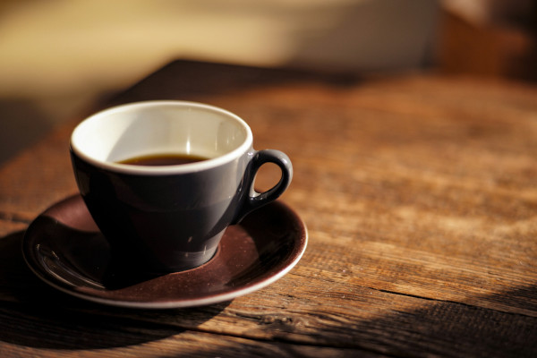
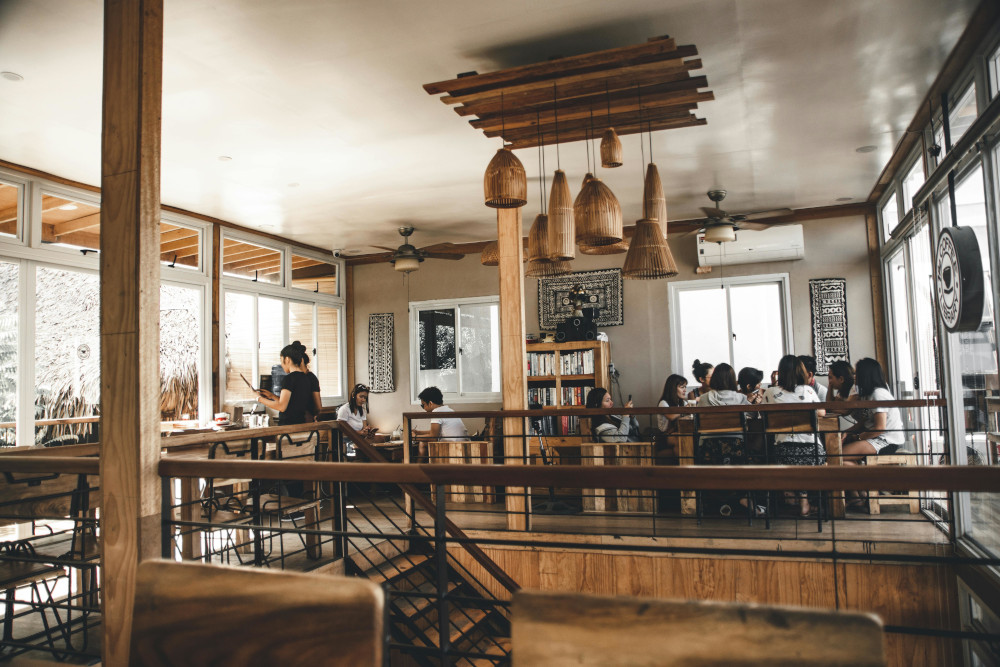

☕ Bem vindos a Coffe+
Aqui, cada xícara conta.
Na Coffe+, o café é mais que uma bebida é um momento de pausa, conexão e prazer
Selecionamos grãos especiais, preparados com cuidado, para quem valoriza o sabor e a simplicidade de um bom café.
Sinta o aroma. Saboreie o instante. Viva a experiência Coffe+.

🌱 Nossos Grãos
Bourbon: Sabor com História
Entre os grãos mais apreciados do mundo, o Bourbon ocupa um lugar especial na Coffe+.
Originário de plantações de altitude e cultivado com cuidado artesanal, o Bourbon é conhecido por seu sabor doce e equilibrado, com notas suaves de chocolate, caramelo e frutas vermelhas.
Por que escolher o Bourbon Coffe+?
- ✔ Grãos 100% arábica, de alta qualidade
- ✔ Corpo aveludado e acidez refinada
- ✔ Torra artesanal que preserva os aromas naturais
Ideal para quem busca uma experiência de café mais rica, delicada e marcante — em cada xícara.
☕ Bourbon Coffe+: mais que café, uma tradição de sabor.
☕ Nossos Produtos
Na Coffe+, cada produto é pensado para transformar seu momento com café em uma verdadeira experiência. Seja você um amante do espresso forte ou do coado suave, temos a opção ideal para seu paladar e seu estilo de vida.
🌿 Cafés Especiais
- Bourbon – Doce, suave, com notas de caramelo e frutas vermelhas.
- Catuaí – Corpo médio, sabor equilibrado e aroma floral.
- Mundo Novo – Intenso, levemente achocolatado, ideal para espresso.
🎁 Kits e Combos
- Kit Degustação – Três sabores em pacotes menores, perfeito para conhecer.
- Kit Presente – Embalagem premium com café + xícara exclusiva.
- Assinatura Coffe+ – Receba cafés frescos em casa todo mês.
🛠️ Acessórios
- Xícaras artesanais – Design moderno, conforto na medida certa.
- Filtros reutilizáveis – Sustentabilidade sem perder sabor.
- Moedores manuais – Extraia o máximo dos seus grãos.
🍫 Complementos
- Biscoitos amanteigados
- Chocolates artesanais com café
- Mel e especiarias para infusão
Acesse aqui a loja
